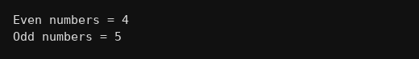

package multiarrays;
public class Q094 {
public static void main(String[] args) {
int a[][] = {{12,7,3},{8,20,5},{9,14,1}};
int e = 0, o = 0;
for(int i=0;i<3;i++){
for(int j=0;j<3;j++){
if(a[i][j]%2==0) e++;
else o++;
}
}
System.out.println("Even numbers = "+e);
System.out.println("Odd numbers = "+o);
}
}